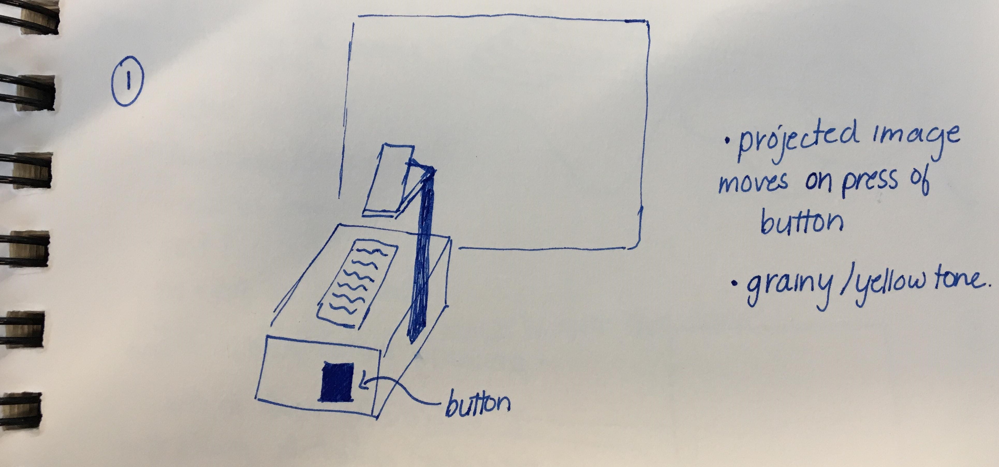
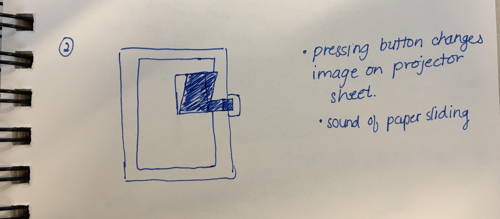
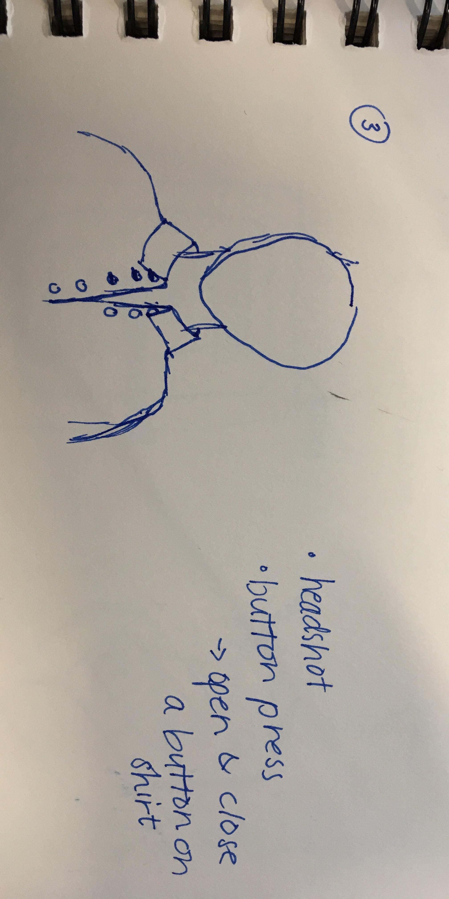
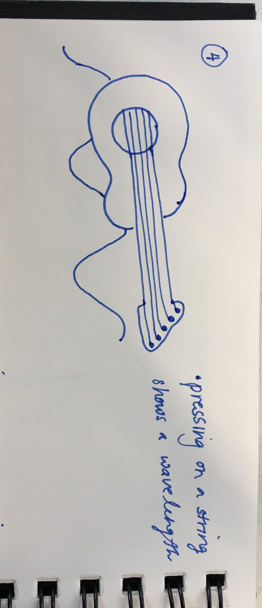
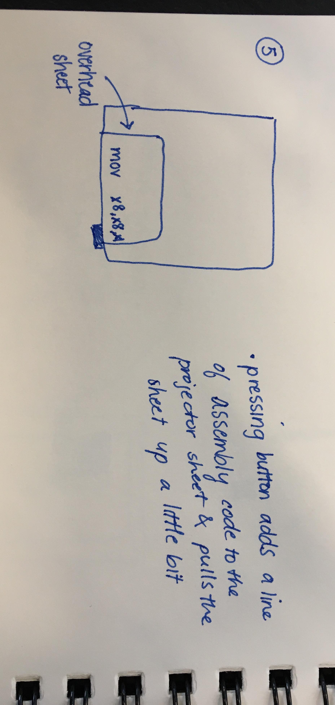
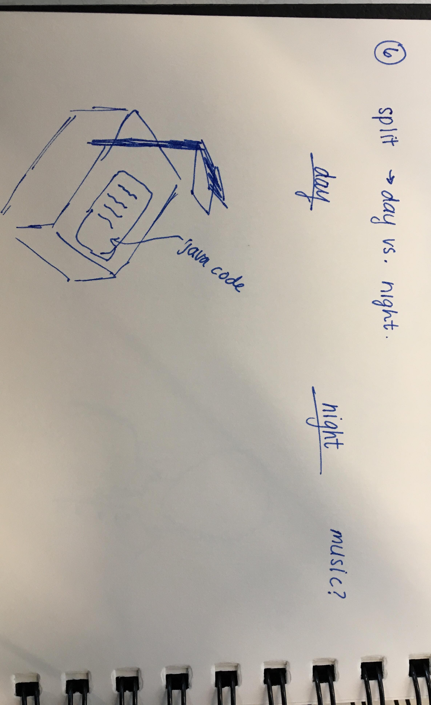
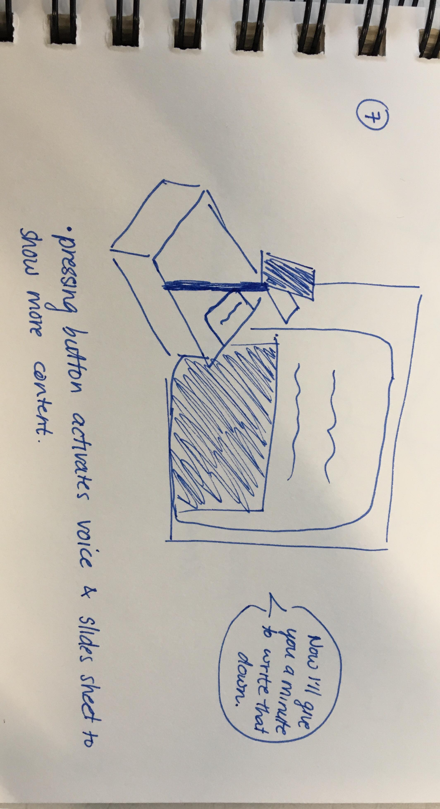
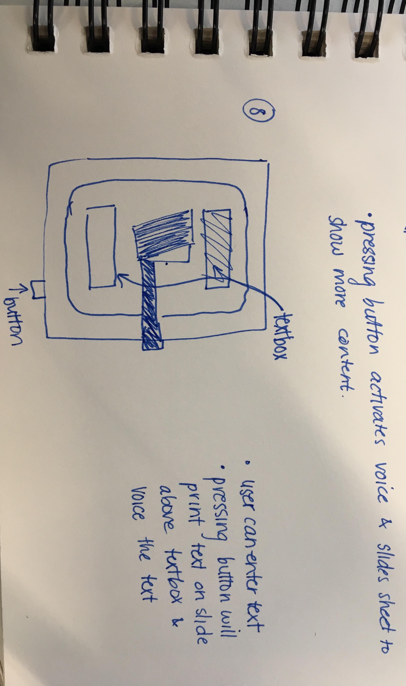
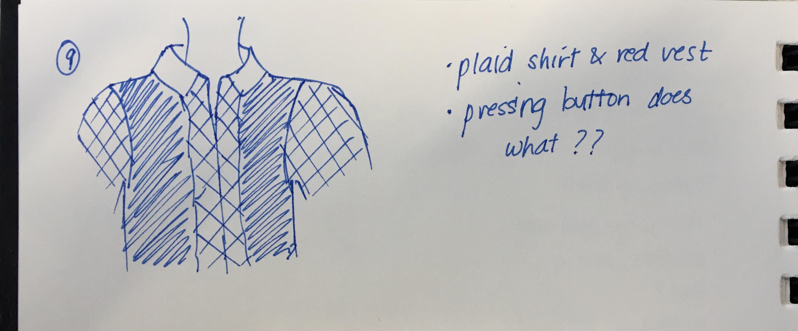
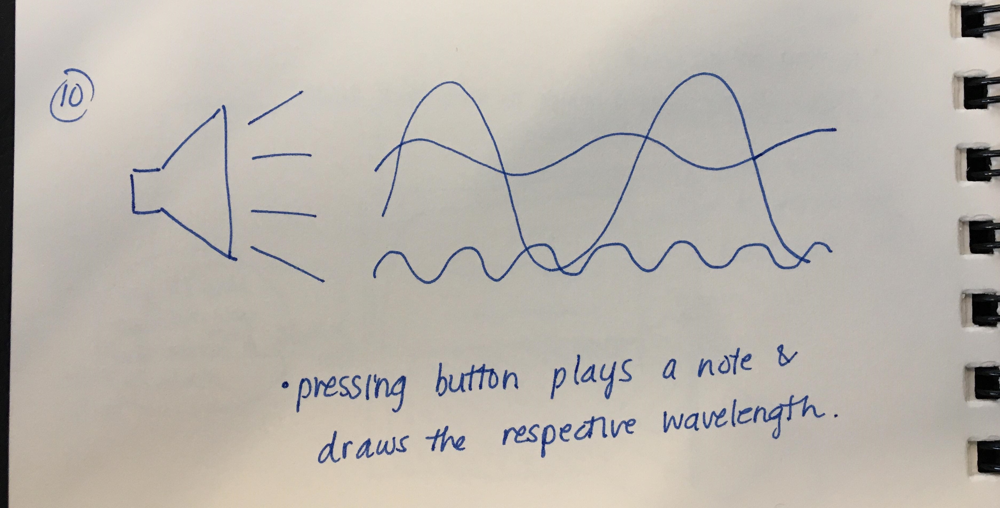

Sabrina Lakhdhir
Developer & Artist
Home
Project 0
Project 1
Project 2
Project 3
Project 2
Winter 2019
Deliverables:
- slideshow of images for first 10 sketches
- table of refined sketches
- link to code and how to run
- video of working project









